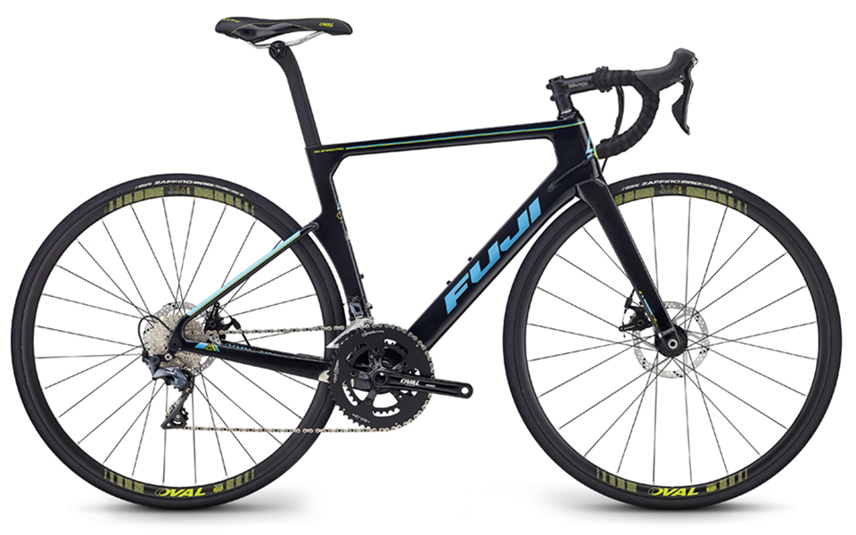
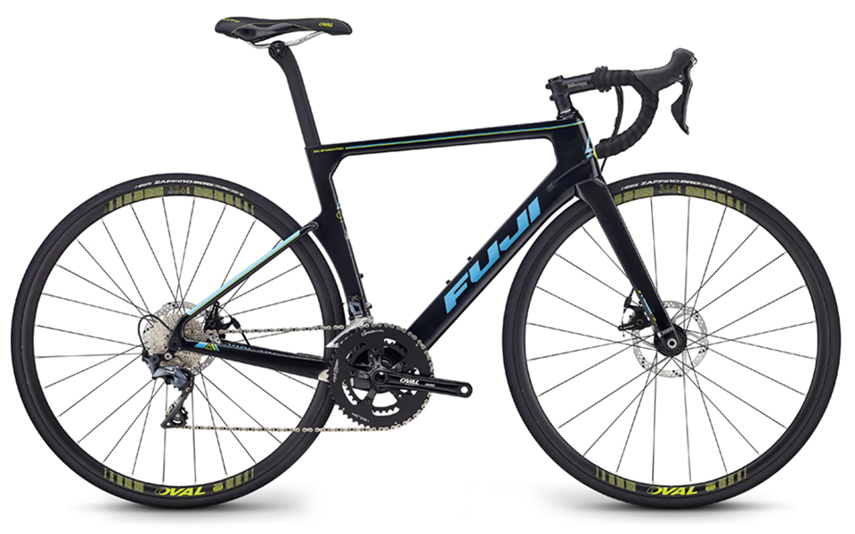
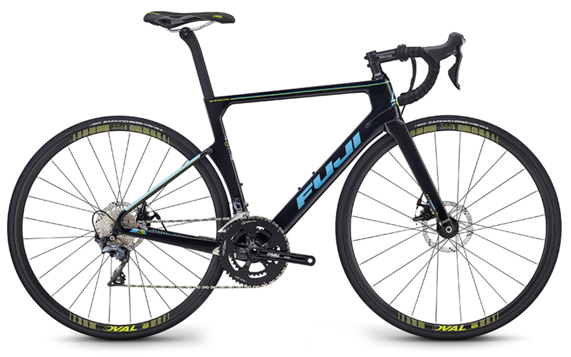
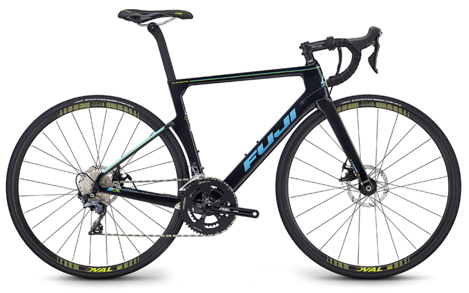

FUJI（フジ）は100年以上前に日本で生まれたアメリカンブランドです。
個性的でカラフルなモデルも多く、ストリートからの支持も集めています。
前身は日本の日米富士自転車という会社でした。
70年代にブームとなった電子フラッシャー付き少年向けスポーツ自転車をいち早く発売したのはFUJI（フジ）です。
他にも覇王号、や日本初のスポーツ車フェザー号等、日本の自転車の歴史に残る自転車を世に送り出しました。
72年に「Fuji（フジ）」ブランド輸出開始以降、アメリカの自転車シーンを牽引しています。 80年、米誌「コンシューマーレポート」にて、ロードモデル「S12S」が第一位に選ばれています。 そして、80年代はアメリカでムーブメントとなっていたマウンテンバイクを黎明期から数多くリリースしました。 さらに、チタンフレームのロードバイクや29インチタイヤの採用などでもトレンドをリードしました。
約8万円〜